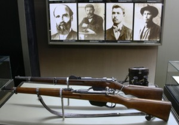
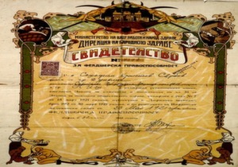
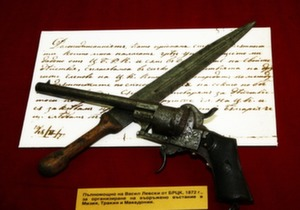

Възраждане
През XVII в. монаси от Рилския манастир откриват метох с килийно у-ще към него. През II пол. на XVIII и нач. на XIX в. Горна Джумая се развива като значителен търговски и занаятчийски център. Българският население живее в квартал Вароша, който е средище на просветния и културния живот. През 1844 с доброволен труд и с дарения е построена църквата „Въведение Богородично". Към нея е открито новобългарско училище с учител Никрлай Цончевич от гр. Търново. През 1850 е построена училищна сграда по съвета на руският учен Александър Ф. Хилфердинг, посетил града през 1857, за издръжката на училището е основан фонд и е съставена кондика с имената на дарителите. Сведения за града дава и Виктор И. Григорович в „Очерк за пътешествието по Европейска Турция". През 1863 учител в Горна Джумая става Димитър Бисеров: по-късно учителствуват Илия Лазаров, Тодор Ненов и Захари Бобошевски. През 1872 учители са — Арсени Костенцев, Константин Босилков и Димитър Марков, които допринасят за развитието на просветното дело. Жителите на града изпращат писмо до руския посланик в Цариград с молба да се окаже материална помощ за училището и църквата. През 1866 е основано читалище. Образувана е Горноджумайската българска община (1871), която развива активна обществено-политическа дейност. Подготовката за Априлското въстание 1876 в града и близките села се ръководи от местен револ. к-т, който обединява усилията си с к-та в с. Рила (дн. град). Негови членове са и учителите А. Костенцев, К. Босилков и Д. Марков. Подготовката е разкрита и ръководителите са арестувани. Жители на Горна Джумая се включват като опълченци в Ру¬ско-турската освободителна война 1877 — 1878; други сформират доброволческа чета за отбрана на селата в Рилското корито от турските бегълци и черкези. На 12/25 февруари 1878 градът е освободен от руската военна част, командувана от майор Иван П. Орлински. Учредени са: органи на местната власт — окръг съдебен съвет и градски съвет. За окръг началник е назначен руския офицер Йосиф В. Шевченко. По силата на Берлинския договор 1878 градът остава под османско иго. Срещу несправедливите решения на Берлинския конгрес 1878 се разгръща протестно движение, ръководено от комитета „Единство", който играе важна роля и в подготовката и провеждането на Кресненско-Разложкото въстание 1878—1879. През лятото на 1879 руската част се изтегля от Горна Джумая; българското население опожарява частично града и го напуска. По-голямата част се заселва в гр. Дупница, София, с. Рила. По-късно някои от жителите се завръщат. Според Васил Кънчов, посетил града в края на XIX в., Горна Джумая е оживен търговски център с дълга търговска улица и много дюкяни, ханове и фурни; в него се докарват стоки от поре¬чията на Струма, Места и Брегалница. Има 6440 ж. — 1250 българи-християни, 4500 турци, 250 власи, 200 цигани, 180 евреи и 60 гърци-християни. Населението се препитава със земеделие, търговия и занаятчийство. Отглеждат се плодове, зеленчуци, тютюн, памук. През 1882— 1883 училището възобновява дейността си, възстановена е и българкската църковна община, която оказва отпор на домогванията на мелнишкия гръцки владика. През 1896 Г. Делчев основава комитет на ВМРО. Революционното дело се разраства, когато войвода става Христо Чернопеев. След 1900 към църковната община е образувано училищно настоятелство. През 1905 в града има вече 170 бълг. къщи, трима свещеници и четирима учители; по данни на Неврокопската митрополия през 1907 живеят 885 ж. българи-християни. След Младотурския преврат 1908 се създават поделения на Народната федеративна партия и Съюза на българските конституционни клубове.